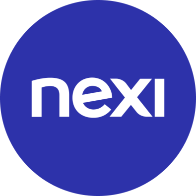
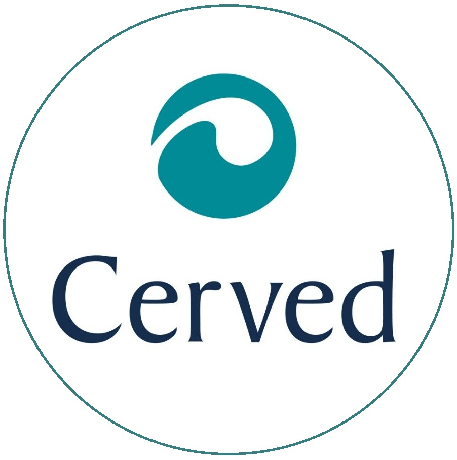
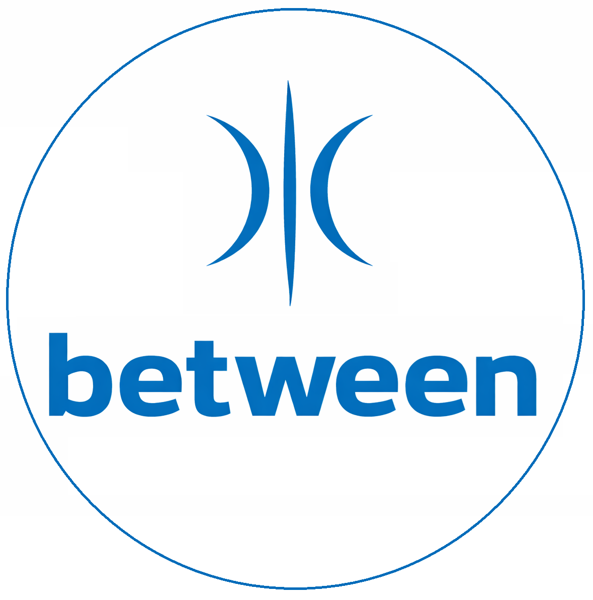

Professional Career
2019 - ongoing

Head of Data Science & Advanced Analytics · Nexi · Milan, Italy
Alberto joined Nexi in 2019 to build the Data Science team from the ground up. This evolved into an organized corporate function that is currently made of 4 teams, beyond the "conventional" definition of Data Science:
Alberto joined Nexi in 2019 to build the Data Science team from the ground up. This evolved into an organized corporate function that is currently made of 4 teams, beyond the "conventional" definition of Data Science:
- Data Platform & Data Intelligence
- Business Insights & Modeling
- Innovation & Financial Crime
- Business Intelligence & Analytics Engineering
2016 - 2019

Senior Data Scientist · Cerved Group · Milan, Italy
Alberto worked in the Innovation and Data Sources area of one of the largest credit information and credit scoring provider in Italy.
In this experience, he developed a deep understanding of the data providers business, from traditional Chamber of Commerce data to alternative data sources, deep diving on both paid and free data sources. He worked on several projects leveraging traditional SQL-based systems, as well as (then) innovative no-SQL technology.
Alberto worked in the Innovation and Data Sources area of one of the largest credit information and credit scoring provider in Italy.
In this experience, he developed a deep understanding of the data providers business, from traditional Chamber of Commerce data to alternative data sources, deep diving on both paid and free data sources. He worked on several projects leveraging traditional SQL-based systems, as well as (then) innovative no-SQL technology.
2014 - 2016

Manager · EY · Milan, Italy
Alberto joined EY after the acquisition of Between by EY itself.
He was part of the Data and Analytics team, leveraging his experience in banking and leading projects mostly focusesd on Fraud Prevention, Security and Anti‑Money Laundering.
Alberto joined EY after the acquisition of Between by EY itself.
He was part of the Data and Analytics team, leveraging his experience in banking and leading projects mostly focusesd on Fraud Prevention, Security and Anti‑Money Laundering.
2008 - 2014

Senior Consultant · Between · Milan, Italy
First job as an IT consultant, working mostly for major Italian banks.
Alberto focused initially on IT Security and its implication at organizational level, dedicating most of his efforts to IAM-related projects (Identity and Access Management).
First job as an IT consultant, working mostly for major Italian banks.
Alberto focused initially on IT Security and its implication at organizational level, dedicating most of his efforts to IAM-related projects (Identity and Access Management).